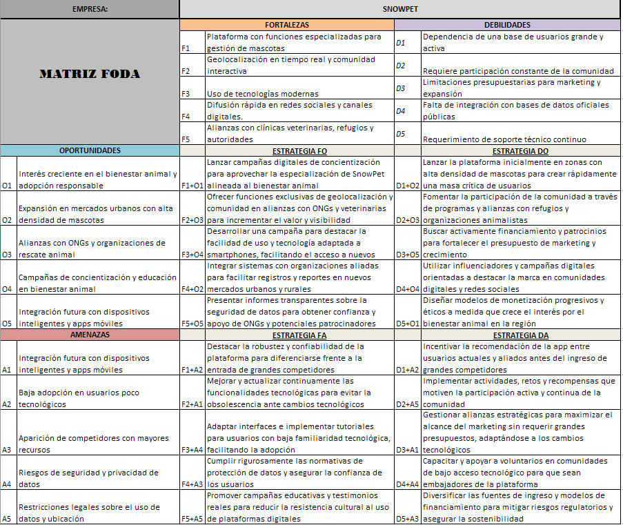
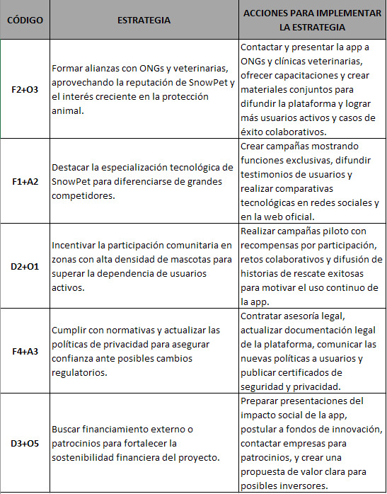

SnowPet
Inicio
Organigrama, planificación estratégica
Acerca de
FODA, Porter y BCG
FODA

Matriz FODA de SnowPet
Análisis de Estrategias

Estrategias implementadas en base al análisis FODA
Modelo de Rivalidad Amplificada de Porter
Análisis de las 5 Fuerzas de Porter
Matriz BCG
Matriz BCG de SnowPet

 Análisis de las 5 Fuerzas de Porter
Análisis de las 5 Fuerzas de Porter

 Matriz BCG de SnowPet
Matriz BCG de SnowPet